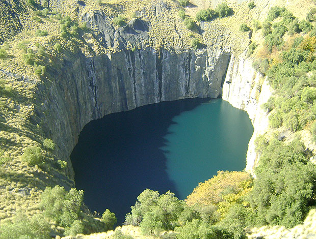
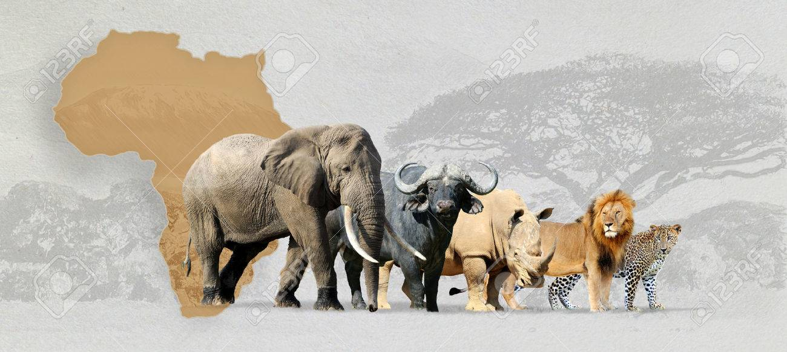
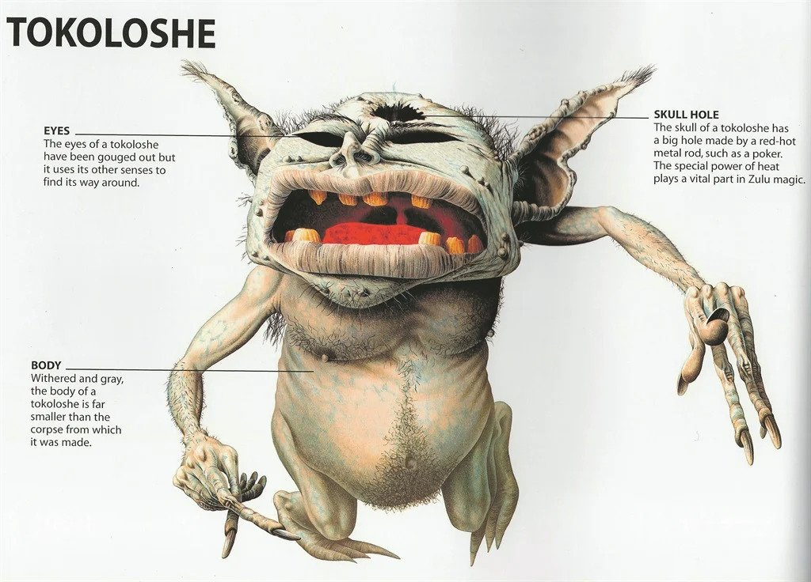
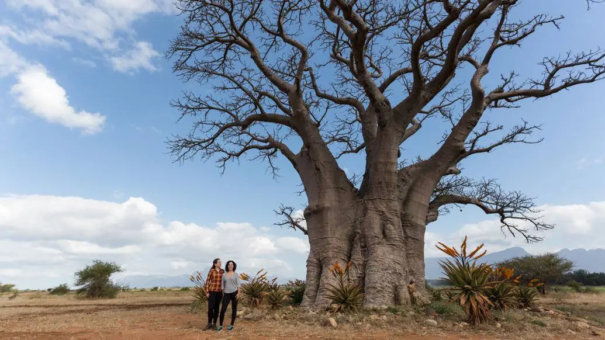
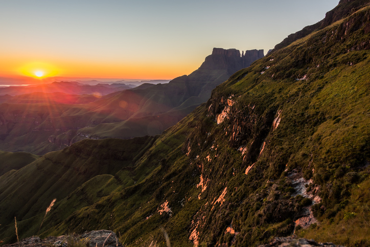
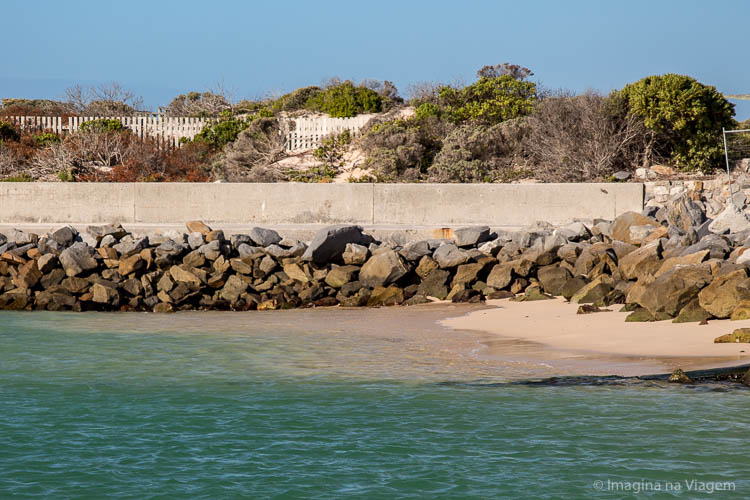
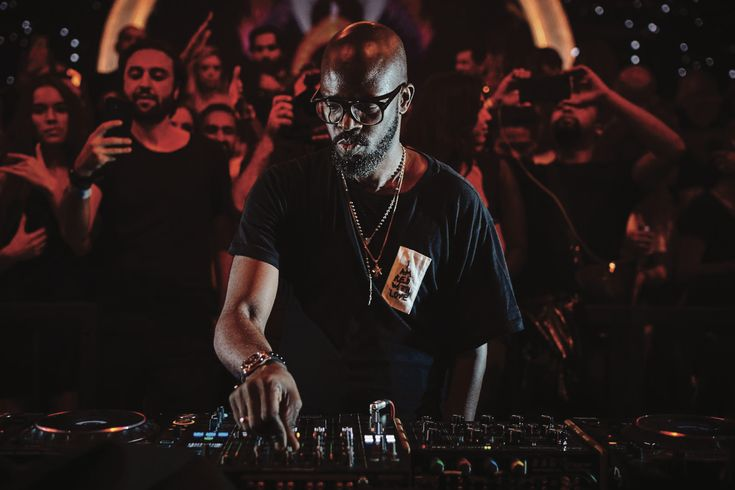

A Nação Arco-Íris
11 línguas oficiais. 60 milhões de histórias. Um passado que transformou o mundo.
Bandeira
Adotada em 1994. O "Y" representa a convergência da sociedade sul-africana. 6 cores sem brasão — única no mundo.
População
Johannesburg é a maior cidade. Pretória é a capital administrativa. Cidade do Cabo é a capital legislativa.
Datas Históricas
Chegada holandesa
Jan van Riebeeck funda uma estação na Cidade do Cabo — início da colonização europeia.
Império Zulu
Shaka Zulu unifica as tribos Nguni e funda o poderoso Reino Zulu.
Início do Apartheid
O Partido Nacional institui o sistema de segregação racial como política de Estado.
Mandela preso
Condenado à prisão perpétua na Ilha Robben — torna-se símbolo mundial da resistência.
Mandela livre
Após 27 anos preso, sua libertação foi transmitida ao vivo para bilhões de pessoas.
Fim do Apartheid
Primeiras eleições multirraciais. Mandela torna-se o primeiro presidente negro do país.
Copa do Mundo FIFA
Primeiro país africano a sediar a Copa. O vuvuzela virou símbolo global.
Curiosidades & Lendas

Diamantes e Ouro
Produz mais de 11% do ouro mundial. O Cullinan (3.106 quilates), o maior diamante já encontrado, foi achado em Pretória em 1905.

Os Big Five
Leão, leopardo, elefante, búfalo e rinoceronte — os animais mais difíceis de caçar a pé, segundo os colonizadores.

Lenda do Tokoloshe
Anão malévolo da mitologia Zulu que causa pesadelos. Para se proteger, os sul-africanos elevavam suas camas com tijolos.

O Baobá Sagrado
A lenda diz que os deuses o plantaram de cabeça para baixo — por isso suas raízes parecem galhos apontando para o céu.

Ubuntu
"Eu sou porque nós somos" — filosofia bantú que influenciou a Constituição e o pensamento de Mandela.

Lenda do Drakensberg
Os Zulus chamam as montanhas de "barreira de lanças". Dizem que um dragão vive nas cavernas — daí o nome holandês.

Dois Oceanos
O Cabo Agulhas é o ponto oficial de encontro do Atlântico e do Índico — o mais ao sul do continente africano.

11 Idiomas Oficiais
É o país com mais línguas oficiais do mundo, incluindo o Xhosa — que usa cliques na pronúncia.
Animais Icônicos
Principais Pratos Típicos
Top 20 Personalidades Famosas
Menção Honrosa

Black Coffee
DJ · Produtor · Embaixador do AmapianoNathi Dlamini — o homem que colocou a África do Sul no mapa da música eletrônica mundial
Quem é Black Coffee?
Nascido em 1976 em Umtata (hoje Mthatha), na província do Eastern Cape, Nathi Dlamini cresceu em Durban e descobriu a música eletrônica ainda jovem. Com apenas um braço funcional — consequência de um acidente de viatura na infância — desenvolveu uma técnica de DJing única, tocando com o braço direito enquanto o esquerdo permanece paralisado. Fundador do selo Soulistic Music, é considerado o maior embaixador do Afro House e do Amapiano no mundo. Em 2022, ganhou o Grammy Internacional de Melhor Álbum de Dance/Eletrônico — o primeiro sul-africano a conquistar essa categoria.
Ouça — "The Rapture Pt. III" (&ME, Black Coffee)
O player do Spotify pode não carregar em todos os browsers sem conta. Abrir no Spotify →
As 3 Maiores Raves / Performances da Carreira
Ushuaïa Ibiza
Residência AnualBlack Coffee é residente fixo do Ushuaïa, o maior clube ao ar livre de Ibiza — considerado o templo da música eletrônica mundial. Suas noites "We Dance As One" reuniram milhares de pessoas por temporadas consecutivas, consolidando-o como o primeiro africano a ter residência fixa em Ibiza.
Coachella Valley Music & Arts
2022 — Indio, Califórnia, EUATocou no maior festival de música dos Estados Unidos para uma multidão de mais de 100 mil pessoas, poucas semanas depois de ganhar o Grammy. Foi um marco histórico: o primeiro artista sul-africano de música eletrônica a se apresentar no Coachella com um set de headliner.
Global Citizen Festival
Johannesburg, África do SulTocou diante de mais de 70 mil pessoas em seu país natal, ao lado de artistas como Beyoncé e Coldplay, no festival que une música e ativismo social. Foi um momento simbólico: o filho das townships de Durban no mesmo palco dos maiores do mundo, representando a África do Sul para o planeta.
Cultura Única
Música: Do Apartheid ao Amapiano
O mbaqanga (jazz township) foi resistência durante o apartheid. Hoje o Amapiano — subgênero de house music criado nas townships — conquista festivais globais. Black Coffee levou esse som ao mundo.
Dança Zulu (Indlamu)
Estampadas vigorosas no chão, roupas tradicionais e escudos de couro. Símbolo de força e identidade.
Rugby como identidade
Os Springboks são tricampeões mundiais. Mandela usou o time como símbolo de unidade — retratado no filme "Invictus".
Arte San Rupestre
Pinturas rupestres no Drakensberg há mais de 3.000 anos. Patrimônio da humanidade pela UNESCO.
Roupas Ndebele
Padrões geométricos vibrantes — influência reconhecida em marcas de moda globais.
Questões Históricas
O Apartheid (1948–1994)
Negros não podiam votar, viver em certas áreas ou usar os mesmos espaços que brancos. Uma das maiores crises de direitos humanos do século XX.
Comissão da Verdade e Reconciliação
Perpetradores confessavam crimes em troca de anistia — modelo único de justiça restaurativa que inspirou o mundo.
Guerras Anglo-Bôeres
Os britânicos usaram os primeiros campos de concentração modernos, onde morreram mais de 26.000 civis bôeres.
Crise de desigualdade
Um dos maiores índices de desigualdade do mundo (Gini ~0,63). A questão fundiária continua sendo debate político central.